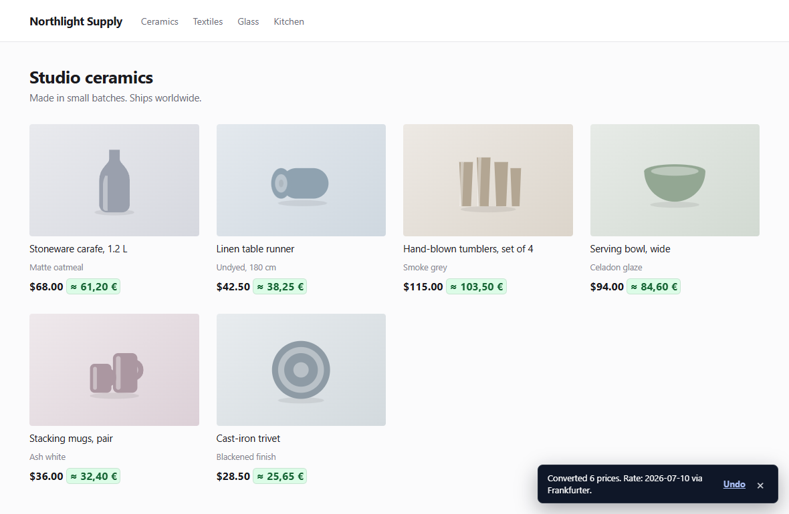
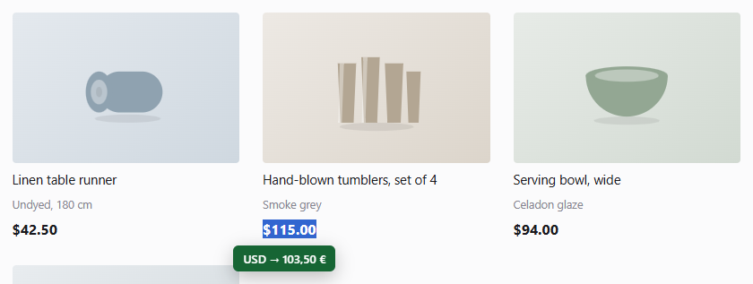

TWINPRICE 使用指南
如何在 Chrome 與 Firefox 中換算網站價格
Twinprice 是免費的瀏覽器擴充功能，可將購物頁面上的價格換算成你偏好的貨幣。安裝後選擇貨幣，再選擇換算頁面價格。若只需要一個價格，請連同貨幣反白選取，然後點選換算所選內容。
更新於
1. 在瀏覽器中安裝 Twinprice
開啟 Chrome 線上應用程式商店的 Twinprice 頁面或 Firefox 附加元件的 Twinprice 頁面，並依照瀏覽器的安裝步驟操作。不需要建立 Twinprice 帳號。
開啟一般的購物網頁。使用瀏覽器的擴充功能選單開啟 Twinprice；若想更快開啟，可以將它釘選到工具列。網頁存取權讓擴充功能能找到支援的價格並顯示換算結果。關於權限和匯率請求的運作方式，請閱讀隱私權政策。
2. 換算整個購物頁面上的價格
- 從瀏覽器工具列開啟 Twinprice。
- 在原貨幣下方，保持選擇AUTO以偵測原貨幣，或自行選擇。如果符號意義不明確，請手動選擇正確的貨幣。
- 在目標貨幣下方，選擇你想看到的貨幣。可以依貨幣名稱或代碼搜尋，例如 EUR 或 USD。
- 點選換算頁面價格。如果換算器已停用，按鈕可能會顯示為開啟並換算頁面。
當 Twinprice 找到支援的價格時，你也可以使用頁面提示中的換算價格。使用並排顯示時，原始金額會保留在換算結果旁邊。

3. 換算單一反白選取的價格
請先在 Twinprice 彈出視窗中設定目標貨幣。接著在網頁上反白選取價格，包括貨幣符號或代碼，例如 USD 115.00。點選反白處下方的藍色換算所選內容按鈕，結果會顯示在綠色泡泡中。
你也可以在選取的文字上按右鍵，選擇換算所選價格。只需要一個金額而不想換算頁面其他部分時，選取換算非常實用。

4. 為常逛的商店記住設定
在彈出視窗中開啟頁面選項，並開啟自動換算此網站。Twinprice 會為該網站記住自動換算，包括你手動選擇的原貨幣或「自動」選項。
若想在所有網站直接換算價格而不再詢問，請改在頁面選項中開啟自動換算所有網站。關閉後，已換算的頁面會恢復原始價格。
在彈出視窗的外觀控制項中，你可以選擇換算價格的顏色和形狀。也可以將換算價格顯示在原價旁，或取代原價。
Twinprice 會跟隨瀏覽器的語言。若要使用 19 種語言中的其他語言，請在頁面選項的語言中選擇。
5. 還原價格或關閉換算
換算頁面後，開啟彈出視窗並選擇還原原始價格即可還原換算。若要停止該商店的自動換算，請在「頁面選項」中關閉自動換算此網站。
若要在所有地方停止價格掃描、提示和自動換算，請關閉啟用換算器。
海外購物的實用範例
以下範例說明如何選擇貨幣以及解讀換算結果。所有匯率都是為了說明而虛構的；擴充功能會使用提供者提供的匯率。
如何以波蘭茲羅提查看歐元價格？
對於以歐元收費的商店，請選擇原貨幣：EUR和目標貨幣：PLN，然後點選換算頁面價格。如果一盞桌燈售價 €89，範例匯率為 1 EUR 兌 4.30 PLN，換算後的價格就是 382.70 PLN（89 × 4.30）。保留原價顯示，以便比較商店的金額與以你本國貨幣估算的金額。
若只想換算這盞桌燈的價格，請將 PLN 設為目標貨幣，反白選取包含 € 或 EUR 的價格，然後點選換算所選內容。
美元符號一定代表美元嗎？
不一定。USD、CAD、AUD 等貨幣都使用美元符號。請在商店的貨幣選擇器或付款資訊中確認貨幣。對於以加幣標價的商品，即使顯示的價格只是 $100，也請選擇原貨幣：CAD。選擇 USD 會使用不同的貨幣組合。
「自動」會根據頁面的貨幣脈絡判斷。如果結果不明確，請手動選擇原貨幣。當商店允許你變更顯示的貨幣時，請讓 Twinprice 的原貨幣與頁面目前顯示的貨幣一致。
為什麼實際收費金額和 Twinprice 的換算不同？
Twinprice 使用參考匯率估算價格以供比較。它不會變更商店的價格，也不會決定你的銀行、發卡機構或支付服務使用的匯率。運費、稅金、換匯差價和其他費用都可能改變最終總額。
例如，以虛構的匯率 1 USD 兌 0.90 EUR 計算，100 USD 的商品是 90 EUR。如果對這筆金額收取假設的 3% 換匯手續費，會增加 2.70 EUR，在其他費用之前合計 92.70 EUR。Twinprice 的價格換算不會計算這筆費用。請查看商店的最終總額和支付服務的條款，了解你實際要付多少。
如何比較兩家商店的價格？
在兩個網站上使用相同的目標貨幣，但為每家商店選擇正確的原貨幣。換算商品價格後，比較包含運費和稅金的最終總額。換算價格較低的商品，整體費用仍可能較高。
如果只想比較你已經知道的金額，請在彈出視窗的金額欄位中輸入。如果「自動」尚未辨識出原貨幣，請先明確選擇一種。
沒有連上網路也能換算價格嗎？
無法取得最新匯率時，最近的快取匯率可以用來換算。這取決於是否有所需貨幣的可用快取匯率；Twinprice 不保證能完全離線運作。快取匯率超過 48 小時會發出警告，且不會使用超過七天的匯率。
了解匯率的來源以及產品的瀏覽器和貨幣限制。
價格無法換算時
- 「自動」無法辨識貨幣
- 像 $ 這樣的符號可能代表多種貨幣。請在「原貨幣」下選擇商店的貨幣後再試一次。換算選取的價格時，如果頁面文字中有貨幣代碼，請一併選取。
- 在瀏覽器設定頁面或擴充功能商店中沒有反應
- 瀏覽器會限制擴充功能存取這些頁面。請改用一般購物網頁，並確認 Twinprice 已啟用且擁有該網站的存取權。
- 部分價格沒有變化
- Twinprice 適用於支援的網頁文字。圖片中、無法存取的框架中或特殊版面中的價格可能無法偵測。請試著選取文字形式的價格，或在彈出視窗中輸入金額。
- 無法使用某個貨幣組合或最新匯率
- 可用的貨幣組合取決於匯率提供者。請檢查網路連線和貨幣選擇，然後重試。Twinprice 可以使用最近的快取匯率；超過 48 小時會發出警告，且不會使用超過七天的匯率。
- 完全無法辨識某家商店的價格
- 當 Twinprice 無法換算某個頁面時，提示訊息和彈出視窗會提供回報這個網站。按下後只會傳送網站名稱（例如 shop.example），以便新增支援。不按就不會傳送任何內容。
- 結帳總額和換算結果不同
- Twinprice 使用 Frankfurter 的參考匯率來協助比較價格。銀行、發卡機構或支付服務可能套用不同的匯率並加收費用。換算後的金額不會改變商店的收費。
還是無法解決？請在 GitHub 回報問題，並附上你的瀏覽器、Twinprice 版本和可重現的範例。請勿包含個人結帳或付款資訊。